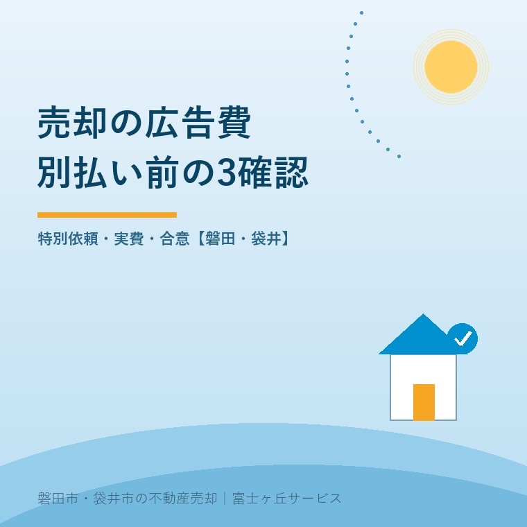
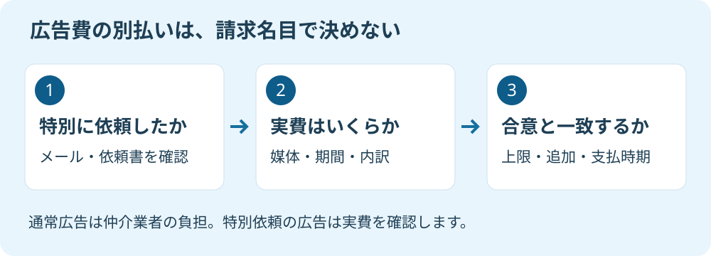

不動産売却の広告費、別払い前の3確認
2026年9月14日｜カテゴリ：仲介手数料・売却実務

この記事の要点
Q. 売却を頼んだ会社から広告費を請求されました。仲介手数料とは別に払うのですか。
通常の広告費は仲介業者の負担です。売主が特別に依頼した広告は実費負担となるため、依頼の記録・内訳・合意内容を確認します。請求名目だけでは判断できません。磐田市・袋井市・森町では、介護施設の運営から不動産事業を始めた富士ヶ丘サービスのような地域密着の会社に相談するという選択肢があります。
実家の売却活動が続くなか、不動産会社から「広告費を別でお願いします」と連絡が来た。頼んだ覚えがないのに、断ると販売が止まるのではないか。そんなときは、金額の高い安いを話す前に、請求の根拠を分けます。
大石浩之（磐田市／不動産業）です。宅地建物取引士として私が説明したいのは、広告にお金がかかることと、そのお金を売主へ別途請求できることは同じではない、という点です。今回は仲介手数料の計算ではなく、広告費の追加負担に絞ります。
確認1：売主が特別に依頼した広告か
通常の広告費は仲介業者の負担です。不動産適正取引推進機構の不動産Q&A問2は、売主が特別に依頼した広告の料金などは実費負担となる一方、情報登録、通常広告、物件調査の費用は業者の負担と整理しています。
同じ問2は、専任媒介契約を更新せず売却を中止する場面の質問です。売れなかったから、それまでの通常広告費を請求してよい、という説明にはなっていません。成約しなければ会社にも持ち出しがある。その営業上の負担と、売主の特別依頼は分ける必要があります。
私は、売主が目的を持って特別な広告を選べる点は良いと考えます。例えば掲載先と期間を指定し、その費用を理解して頼むなら、販売の選択肢になります。全件で同じ広告を使うより、物件に合う方法を相談できる余地があります。
その上で、業者側には「特別」の中身を先に説明してほしい。通常の販売活動で何をするのか。追加では何が変わるのか。売主が頼む前に、この違いを出すのが筋です。会社から提案された広告でも、提案の時点と売主が依頼した時点は分けて確かめます。
確認するのは、媒介契約書だけではありません。見積書、メール、メッセージ、打合せの記録も並べます。「広く紹介してください」という希望を伝えたことと、有料の特別広告を依頼したことを同じに扱わず、どの広告をどの条件で頼んだのかを具体化します。
仲介手数料と広告費が一枚の請求書に入っていても、項目を分けて説明してもらいます。報酬の上限や仕組みは、仲介手数料の計算と負担の考え方を参照してください。手数料が安いから、追加費用の中身を見なくてよいという話にはなりません。

確認2：広告の実費を内訳と証拠で見る
特別に依頼した広告の請求は、実費の中身を確認します。不動産適正取引推進機構Q&A問2が示す「実費」を、広告一式という名称のまま受け取らないことです。何にいくら支払った費用かが分かる資料を依頼します。
| 見る項目 | 担当者への聞き方 |
|---|---|
| 対象 | どの媒体の、どの掲載枠ですか。 |
| 期間・数量 | 掲載日、掲載回数、配布部数は何ですか。 |
| 金額 | 単価と税を含む総額を分けて示せますか。 |
| 実施 | 掲載画面や掲載紙などを見せてもらえますか。 |
| 費用の根拠 | 請求書など、実費を確認できる資料はありますか。 |
この表は、私が売主に勧める確認項目です。掲載の画面があっても、請求された金額の根拠まで分かるとは限りません。逆に見積書があっても、予定どおりに実施されたかは別です。予定と実績を一組にして見ます。
数字は売主の財布に戻して考えます。例えば、比較のために仮に税込6万円の追加広告を検討し、その広告による売却額の増加を0円と置けば、手取りは6万円減ります。広告料の相場を示した例ではありません。効果をまだ見込めない段階で、確定する支出だけを数える例です。
私は、その6万円を「売却額から見れば小さい」で片付けません。売主が介護費用や引越し費用を用意する家族なら、同じ財布から出るお金だからです。追加広告でどの買主に届けたいかが説明できて、家族がその支出を選べることを先に確かめます。
会社が通常使う広告契約の料金を、説明なく一物件に割り振った請求にも、内訳の確認が要ります。広告制作、掲載、撮影などが混ざっていたら、それぞれを何として依頼したのか聞いてください。別の名前に変わっただけで、売主負担の根拠が生まれるわけではありません。
確認3：合意した範囲と、請求額が一致するか
広告費の請求書は、売主が事前に了解した内容と照合します。媒体、期間、費用上限、追加掲載の扱い、支払時期を書いた資料を用意すると、どこまで頼んだかを話しやすくなります。私は、依頼前にこの範囲を残すよう勧めます。
会社の営業経費を、後から売主の別財布に付け替えてはいけません。これは私の実務上の判断です。販売活動に費用がかかるのは承知しています。だからこそ、特別に何を頼まれたかと、通常の仲介業務で何を担うかを、不動産会社が先に説明すべきです。
ただし、請求書を見ただけで相手を不当だと決めつけるつもりもありません。家族の別の人が追加広告を頼んでいた可能性は残ります。私にも、販売を止めずに話を進めたい気持ちと、根拠のない支出をさせたくない迷いがあります。最初に依頼の記録を出してもらうのは、その両方を守るためです。
見積もりより請求額が増えたなら、期間を延ばしたのか、掲載枠を変えたのかを確認します。変更を誰が、いつ承諾したかも一緒に示してもらう。会社の提案書にある金額と、売主が承諾した金額を混ぜないことです。
「売れたら払う」という話だったのか、掲載の実施で払う約束だったのかも確認します。広告費の支払条件と、仲介報酬の支払時期は別の論点です。RETIOの問3は報酬の支払時期を扱っており、広告費を追加請求できる根拠としては使いません。
契約を更新しない時期の請求なら、媒介契約の3か月と更新前の確認も参考になります。契約の終了に伴う費用や違約金まで争いがある場合は、広告費だけの一般論で決めず、契約書を持って専門家に確認を。
磐田・袋井の販売活動は、広告の量より届き先
磐田市・袋井市の実家で追加広告を検討するなら、私が先に聞くのは「誰に見てもらうための広告か」です。掲載回数だけで売却効果を判断しません。地域の需要や成約率について、本記事で裏取りのない数字は置きません。
私なら、現地を通る人へ知らせたいのか、市外で家を探す人に室内の状態を伝えたいのかを分けます。前者なら現地の表示、後者なら写真や間取りの説明が検討対象になります。これは広告効果を保証する話ではなく、費用をかける目的の整理です。
看板を増やす提案でも、設置場所や表示内容の確認が残ります。磐田市内の看板については、売却看板を出す前の許可確認で説明しています。「追加でお金を払ったので任せきり」で終わらせず、何を掲出するのかを見せてもらいます。
問い合わせが来ない理由が、情報不足なのか、条件なのか、価格なのかは、広告費の請求書だけでは分かりません。私なら通常の活動報告を先に読み、問い合わせへの返答や写真の見直しで対応できる部分を確かめます。その上で追加の有料広告を比べます。
9月23日の前に、請求の根拠を一枚にそろえる
全国宅地建物取引業協会連合会は9月23日を「不動産の日」としています。2026年9月14日の本記事では、その日を前に費用の確認を提案します。記念日を理由に新しい広告費負担が生じるわけではありません。
担当者へは、次の一文を送れば確認を始められます。「今回の広告について、私が特別に依頼した記録、実費の内訳、事前に合意した支払条件を示してください」。私は、責める言葉より確認する資料を具体的にする方が、話を進めやすいと考えます。
- 特別な広告を頼んだ日時と内容を確認する。
- 実施内容と、実費の根拠を受け取る。
- 上限・変更・支払時期を合意資料と比べる。
富士ヶ丘サービスでは、磐田・袋井の実家について、介護と不動産を一体で相談できます。家族が困らない売却のために、売値だけでなく出ていくお金も整理する立場です。私は、追加を頼むかどうかを決める前に、まず今ある請求の根拠をそろえるよう案内します。
よくある質問
契約や依頼の前に確認したい疑問に答えます。
- 売れなかったので、通常の広告費を払ってほしいと言われました。
- 不動産適正取引推進機構Q&A問2では、通常の広告や情報登録、物件調査の費用は仲介業者の負担とされています。売れなかったことだけで、通常広告が売主の別負担になるわけではありません。特別に依頼した広告があるかを契約書やメールで確認し、請求の根拠が不明なら内訳と依頼記録の提示を求めます。
- 自分から頼んだ特別な広告でも、内訳を確認できますか。
- 特別に依頼した広告は実費負担となるため、媒体名、掲載期間、数量、単価、税の扱いと実施の記録を確認します。見積書だけでなく、請求額の根拠を示す資料も求めてください。事前に合意した上限や対象範囲との照合が必要です。追加掲載や期間延長まで頼んだかも分け、費用の争いは契約資料を持って専門家に確認を。
- 広告費の追加依頼を断ると、売却を続けられませんか。
- 追加広告への依頼と、現在の媒介契約で行う販売活動は分けて話します。追加をしない場合の掲載先、写真の更新、問い合わせ対応などを担当者へ確認してください。新しい費用を負担しないことで何が変わるのか、書面で説明を受けます。契約解除や違約金を伴う判断は、その場で即答せず契約内容を専門家に確認を。

この記事を書いた人：大石浩之（磐田市／不動産業・宅地建物取引士）
富士ヶ丘サービス株式会社。介護施設の運営から不動産事業を始め、磐田市・袋井市・森町で、介護と相続、実家の売却を一体で相談できる窓口を設けています。家族が困らない売却のため、資料と現地の条件を一件ずつ整理します。著者プロフィール
本記事は2026年9月14日時点の公開情報と筆者の意見です。制度・数値・手続きは変更されることがあります。契約の効力、許可の要否、税務・登記・相続の個別判断は、担当窓口や弁護士・税理士・司法書士などの専門家に確認を。